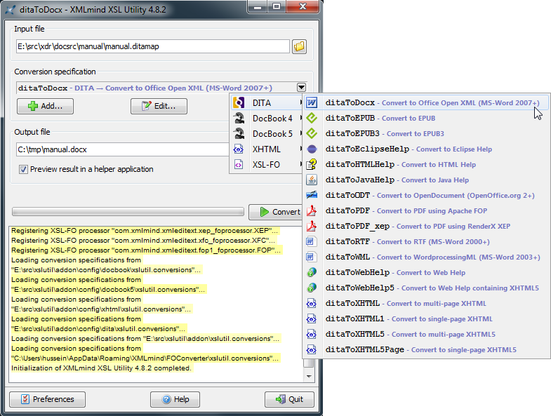

|
XMLmind DITA Converter Manual |
|
XMLmind DITA Converter Manual |
ditac command-line utility by using examples. You'll
find all the DITA input files used to run the following examples in the
ditac_install_dir/docsrc/manual/
directory.
TipXMLmind DITA Converter has
been integrated to XMLmind XSL Utility , which is part of the XMLmind XSL-FO Converter commercial
product.
Unlike
ditac, which is a command-line
utility, XMLmind XSL Utility is a graphical tool. It makes it easy
parameterizing the DITA conversion process and then performing document
conversions.

Moreover, this graphical tool comes in a Windows,
auto-installable, self-contained, setup.exe distribution(1) which includes Apache
FOP , XMLmind XSL-FO Converter and ditac.
If you
just want to quickly and easily evaluate all the potential of ditac, you
may want to download XMLmind XSL Utility Evaluation Edition from XMLmind XSL-FO Converter web site . Do not be
surprised because XMLmind XSL Utility Evaluation Edition generates output
containing random duplicate letters. Of course, this does not
happen with Professional Edition!
|
$ ditac out/manual.pdf manual.ditamap
out/ is automatically created if it
does not already exist.
ditac.options file which XSL-FO processor to
use, you'll have to execute:$ ditac -fop /opt/fop/fop out/manual.pdf manual.ditamap
$ ditac -xep /opt/xep/xep out/manual.pdf manual.ditamap
$ ditac -ahf "C:\AHFv6\AHFCmd.exe" out/manual.pdf manual.ditamap
TipNo need to declare Apache FOP using the -fop command-line
option if you have installed the distribution called
ditac-N_N_N-plus-fop.zip. This distribution contains most
recent Apache FOP (including hyphenation and MathML
support). This XSL-FO processor is automatically declared and thus, ready
to be used to generate PDF or PostScript.
|
$ ditac out/manual.ps manual.ditamap
ditac also allows to convert one
or more topic files rather than a single map or bookmap file:
$ ditac -toc \ out/draft.pdf embed1.dita embed2.dita
-toc option. Using the
-toc option when the input file already specifies a TOC
is harmless, so you could as well add a -toc line to your ditac.options
file.
ditac.
$ ditac out/manual.rtf manual.ditamap
ditac.options file which XSL-FO processor to
use, you'll have to execute:$ ditac -xfc /opt/xfc/fo2rtf out/manual.rtf manual.ditamap
fo2rtf
(fo2rtf.bat on Windows). Using this location, ditac
infers the locations of fo2wml,
fo2docx and
fo2odt.
$ ditac out/manual.xml manual.ditamap
$ ditac out/manual.docx manual.ditamap
$ ditac -v -p number all \
out/manual.odt manual.ditamapditac to print progress messages on the console.
Recommended when converting large documents.
$ ditac -images img -p xsl-resources-directory res \
out/manual/_.html manual.ditamapditac are created in
the out/manual/ directory.
ditac to copy
all the image files referenced by the input DITA document to
out/manual/img/. Specifying the -images
option when generating an output format based on XHTML/HTML is needed
in almost all the use cases.
ditac to copy all the resources needed by the XSLT
stylesheets (CSS stylesheet, navigation icons, etc) to
out/manual/res/. Specifying a value for the xsl-resources-directory
parameter when generating an output format based on XHTML/HTML is
needed in almost all the use cases.
out/manual/_.html. In fact, this name is just
used to specify the filename extension of the output files. The actual
basenames of the output files are determined by examining the
chunk and copy-to attributes possibly specified in
the DITA map.
$ ditac -images img -p xsl-resources-directory res \
out/manual/foo.html manual.ditamapditac will use "foo" as a basename and you
may end up having some output files called
foo.html, foo-2.html,
foo-3.html, etc. When the basename is specified
as "_", it is the basename of the DITA map which is used.
That is, you may have some output files called
manual.html, manual-2.html,
manual-3.html, etc.
-format
option (or -f in its short form). Example:
$ ditac -format html \
-images img -p xsl-resources-directory res \
out/manual/_.html manual.ditamap$ ditac -images img -p xsl-resources-directory res \
-p number all \
-p chain-pages both \
-p chain-topics yes \
-p default-table-width 100% \
out/manual/_.html manual.ditamap-c in its short form).
$ ditac -chunk single \
-images img -p xsl-resources-directory res \
out/manual.html manual.ditamap$ ditac -format webhelp \
-images img -p xsl-resources-directory res \
webhelp/_.html manual.ditamap
C:\> ditac -images img -p xsl-resources-directory res \
out\manual.chm manual.ditamapditac.options file the location of
hhc.exe, you'll have to execute:
C:\> ditac -hhc "C:\Program Files\HTML Help Workshop\hhc.exe" \ -images img -p xsl-resources-directory res \ out\manual.chm manual.ditamap
$ ditac -images img -p xsl-resources-directory res \
out/manual.jar manual.ditamapditac.options file the location of
jhindexer (jhindexer.bat on
Windows), you'll have to execute:
$ ditac -jhindexer /opt/jh2.0/javahelp/bin/jhindexer \ -images img -p xsl-resources-directory res \ out/manual.jar manual.ditamap
$ ditac -format eclipsehelp \
-images img -p xsl-resources-directory res \
out/com.acme.widget.userguide/_.html manual.ditamapcom.acme.widget.userguide/ in the case of
the above example) to the plugins/ directory of
Eclipse and then use a text or XML editor to modify the generated
output_directory/plugin.xml:
<plugin name="EDIT HERE: title of this help"
id="EDIT HERE: unique.id.of.this.plugin"
provider-name="EDIT HERE: author, company or organization"
version="1.0.0">
<extension point="org.eclipse.help.toc">
<toc file="toc.xml" primary="true"/>
</extension>
<extension point="org.eclipse.help.index">
<index file="index.xml"/>
</extension>
</plugin>plugin.xml, suffice to pass extra XSLT stylesheet
parameters to ditac:
$ ditac -format eclipsehelp \
-p plugin-name "ACME Widget User's Guide" \
-p plugin-id com.acme.widget.userguide \
-p plugin-provider "ACME Corp." \
-images img -p xsl-resources-directory res \
out/com.acme.widget.documentation/_.html manual.ditamap
RememberIf you want to see your document by selecting
in Eclipse:
|
$ ditac -images img -p xsl-resources-directory res \
out/manual.epub manual.ditamap
| (1) | Of course, a .zip distribution is also available for platforms other than Windows. |